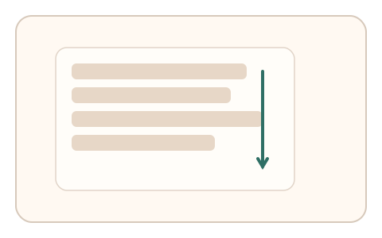
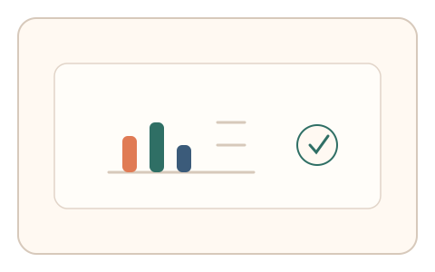

#86
Morphological Analysis - Combination Batches
已扩展
随机插入现实核对
在真实交互流中随机插入 1 秒微任务，让用户基于当前滚动或移动状态做即时判断，以预测误差与一致性验证真实性。
概念原文
在正常交互流中随机插入 1 秒微任务，要求用户根据当前滚动/移动状态做即时判断，系统比较预测误差与任务内一致性。任务结构为随机插入，信号形态为预测误差。
用“现实耦合的一致性”卡住脚本的预录轨迹。
研究背景
真实用户的交互具有连续上下文，而脚本更依赖预录或固定流程。随机插入基于“当前状态”的微任务，可检验在场一致性并提升对自动化的抵抗力。
核心机制
- 在正常交互流中随机弹出短微任务。
- 任务要求用户根据当前滚动或移动状态做判断。
- 记录预测误差与任务内一致性。
- 多次随机插入累积稳定信号。
用户流程
- 步骤 1：用户正常浏览或操作页面。
- 步骤 2：随机出现 1 秒微任务并即时响应。
- 步骤 3：系统记录误差与一致性并判定。
判定信号
预测误差
真实用户对当前状态有更准确的即时判断。
任务内一致性
在场交互更容易保持连续一致。
判定逻辑
预测误差需低于人类阈值且多次一致；误差过大或缺乏连续性判异常。
对抗面
- 脚本尝试读取页面状态并即时响应
- 重放真实用户的状态序列
防御与缓解
- 随机化插入时机与任务类型
- 绑定瞬时状态与短时序特征
- 叠加反应时与轨迹信号进行多信号判定
可达性与风险
提供可跳过或简化版本，避免对注意力障碍用户造成压力。
- 突发任务可能打断正常体验
- 任务过于频繁导致用户疲劳
可视化状态

状态 1：正常交互
用户处于正常滚动或操作状态。

状态 2：随机微任务
随机弹出即时判断任务。

状态 3：一致判定
依据预测误差与一致性判定。
参考资料
Reaction time
说明即时响应作为行为信号的意义。
Attention
说明注意力对即时判断的作用。